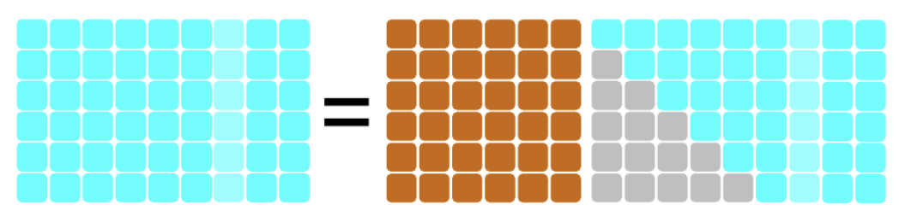
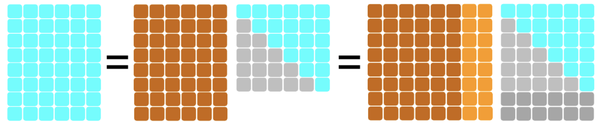
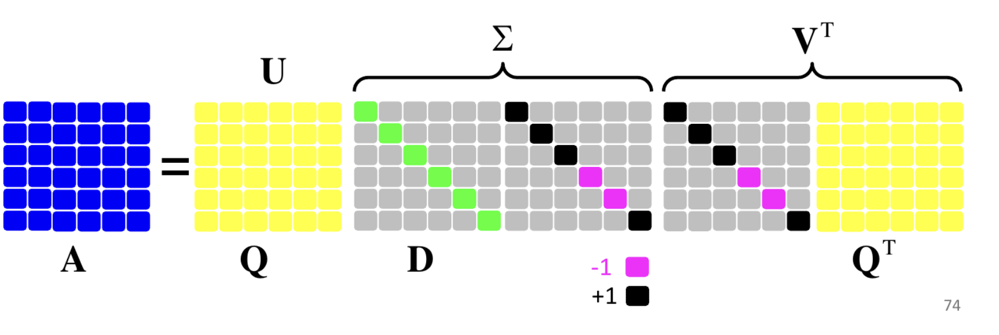
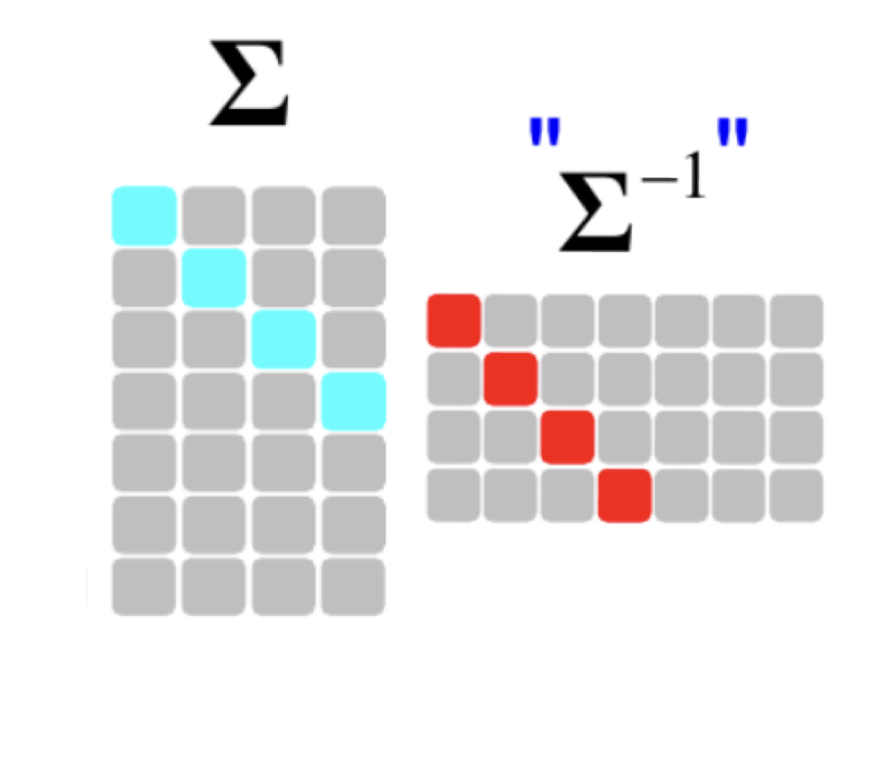
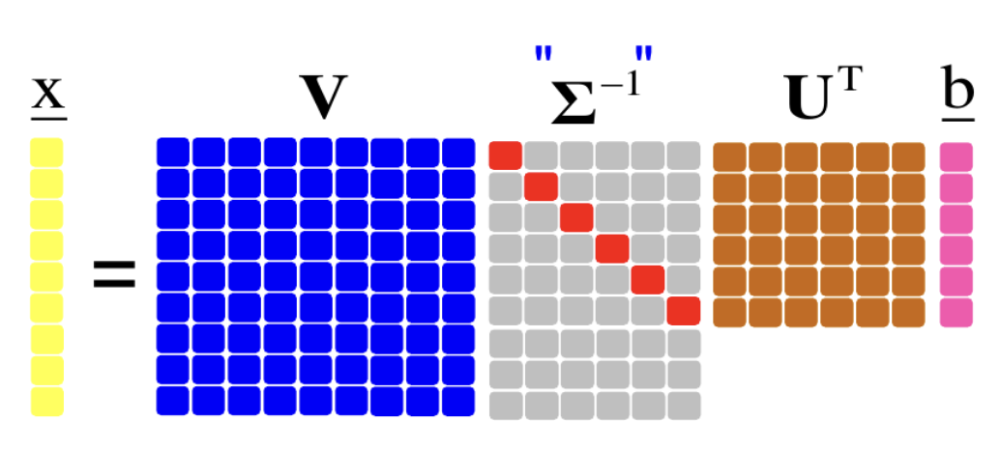
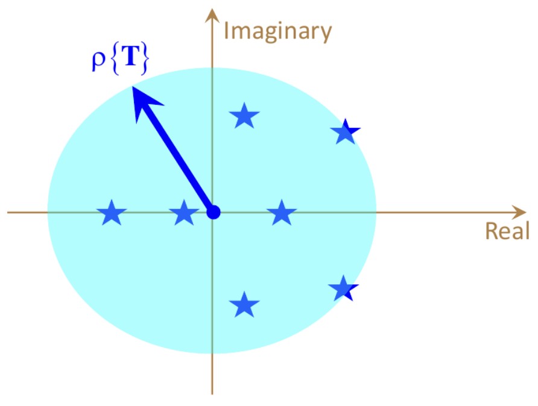
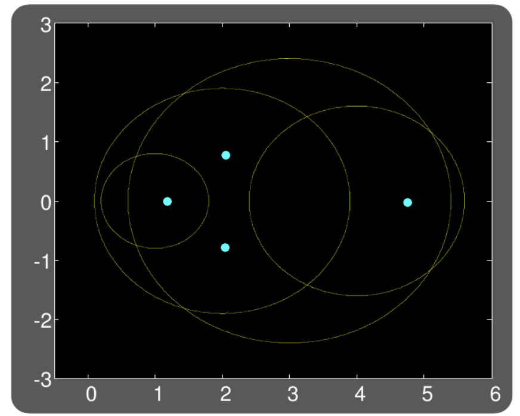
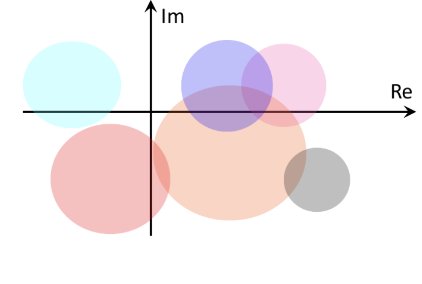

Numerical Formula Sheet
Table of Contents
- 1. פירוק LU
- 1.1. מטריצה משולשת תחתונה בסיסית
- 1.2. מטריצה רגילה
- 1.3. שימוש בפרמוטציה לפירוק \(LU\)
- 1.4. שימוש ב-LU לפתרון מערכת משוואות
- 1.5. מטריצות לא ריבועיות
- 1.6. שיטות לבחירת Pivot מוצלח
- 1.7. פירוק LDV
- 1.8. פירוק \(LDL^{T}\) קיים למטריצות סימטריות ורגילות
- 1.9. פירוק \(LDL^{T}\) קיים למטריצה סימטרית וריבועית אם״ם היא חיובית מוגדרת
- 1.10. פירוק צ׳ולסקי
- 1.11. אלגוריתם יעיל לפירוק \(LU\)
- 2. ריבועים פחותים
- 3. אורתוגונליות ופירוק \(QR\)
- 4. ערכים עצמיים וסינגולריים
- 4.1. הצמדת מטריצה משמרת ערכים עצמיים
- 4.2. פירוק Schur
- 4.3. לכסון מטריצה סימטרית ממשית (פירוק ספקטרלי)
- 4.4. חיוביות/אי-שליליות של ע״ע במטריצות סימטריות
- 4.5. ע״ע כפתרון לבעיות אופטימיציה
- 4.6. פירוק SVD
- 4.7. שלבי הבנייה של פירוק SVD
- 4.8. פירוק SVD למטריצות סימטריות
- 4.9. פתרון מערכות משוואות ע״י SVD
- 4.10. פתרון ריבועים פחותים ע״י SVD
- 4.11. פתרון מאוחד לשני סוגי הבעיות
- 4.12. קירוב מטריצות עם אילוץ דרגה
- 5. תהליכים איטרטיביים
- 5.1. מערכת דינמית
- 5.2. מערכת דינמית של מטריצה לכסינה
- 5.3. מערכת דינמית יציבה אסימפטוטית
- 5.4. מטריצה יציבה
- 5.5. רדיוס ספקטרלי
- 5.6. מערכת של מטריצה לכסינה \(T\) עם \(\rho \left( T \right) < 1\) יציבה אסימפטוטית
- 5.7. קצב התכנסות
- 5.8. הגדרה של נורמה
- 5.9. נורמות ידועות
- 5.10. משפט שקילות הנורמות
- 5.11. נורמה של מטריצה ריבועית
- 5.12. משפט גרשגורן
- 5.13. מטריצה דומיננטית באלכסון
- 6. הגדרות בסיסיות ותכונות
- 7. גזירת ביטויים מטריציים וקטוריים
- 8. אלגברה א׳
- 9. כמויות חישובים
- 10. טריקים
1. פירוק LU
1.1. מטריצה משולשת תחתונה בסיסית
- כל איברי אלכסונה 1
- משולשת תחתונה
1.2. מטריצה רגילה
ריבועית, וניתן לפרקה למכפלה מהצורה \(A=LU\) (L משולשת תחתונה בסיסית, U משולשת עליונה כלשהי עם איברי אלכסון שונים מ-0).
1.3. שימוש בפרמוטציה לפירוק \(LU\)
נבצע את תהליך הדירוג כרגיל.
בכל פעם שניתקל באיבר ציר בעייתי, נחליף את השורה בה נמצא באחת השורות מתחתיו (ע״י כפל במטריצת פרמוטציה מתאימה).
כל מטריצה ריבועית \(A\) ניתנת לפירוק מהצורה \(PA=LU\), כאשר \(U\) לאו דוקא מדרגה מלאה.
1.4. שימוש ב-LU לפתרון מערכת משוואות
ע״י הקשר: \(\underline{b} = A \underline{x} = LU \underline{x} = L \left( U \underline{x} \right) = L \underline{y}\)
- מציבים \(U\underline{x} = \underline{y}\) ופותרים \(L\underline{y} = \underline{b}\) ע״י החלפה קדמית.
- פותרים \(U\underline{x} = \underline{y}\) ע״י החלפה אחורית.
1.5. מטריצות לא ריבועיות


1.6. שיטות לבחירת Pivot מוצלח
- Partial Pivoting - בוחרים את איבר הציר להיות הגדול ביותר בעמודתו (ע״י פרמוטציה לשורות).
- Full Pivoting - בוחרים את איבר הציר להיות הגדול ביותר ביתרת המטריצה (ע״י פרמוטציה לשורות לעמודות).
1.7. פירוק LDV
כל מטריצה \(A\) ריבועית שאינה סינגולרית ניתנת לפירוק מהצורה \(PA=LDV\) כאשר:
- \(P\) מטריצת פרמוטציה שמחליפה סדר שורות
- \(L\) מטריצה משולשת תחתונה בסיסית
- \(D\) מטריצה אלכסונית בה כל האיברים שונים מ-0
- \(V\) מטריצה משולשת עליונה בסיסית
1.8. פירוק \(LDL^{T}\) קיים למטריצות סימטריות ורגילות
עבור מטריצה מטריצה סימטרית ורגילה \(A\), קיים פירוק \(A=LDL^T\) ללא צורך בפרמוטציה, עם אלכסון מטריצה \(D\) חיובי ממש. בפרט ניתן לרשום שקיימת \(M\) משולשת תחתונה עם אלכסון חיובי, כך ש-\(A = MM^T\).
1.9. פירוק \(LDL^{T}\) קיים למטריצה סימטרית וריבועית אם״ם היא חיובית מוגדרת
מטריצה סימטרית וריבועית \(A\) היא חיובית מוגדרת, אם ורק אם קיים עבורה פירוק \(A=LDL^T\) ללא צורך בפרמוטציה, עם אלכסון מטריצה \(D\) חיובי ממש. בפרט ניתן לרשום שקיימת \(M\) משולשת תחתונה עם אלכסון חיובי, כך ש-\(A = MM^T\).
1.10. פירוק צ׳ולסקי
מטריצה ריבועית, סימטרית וחיובית מוגדרת \(K\) ניתנת לפירוק יחיד מהצורה \(M M^T\)
כאשר \(M\) הינה מטריצה משולשת תחתונה עם איברי אלכסון חיוביים.
1.11. אלגוריתם יעיל לפירוק \(LU\)
2. ריבועים פחותים
2.1. סימון בעיית ריבועים פחותים כבעיה ריבועית
מתקיים: \[ \|A\underline{x} - \underline{b}\|_2^2 = \underline{x}^TK\underline{x} - 2\underline{x}^T\underline{f}+c \]
כאשר:
- \(K = A^TA\)
- \(\underline{f} = A^T\underline{b}\)
- \(c=\underline{b}^T\underline{b}\)
2.2. מציאת מינימום של בעיה ריבועית
בהינתן הבעיה הריבועית \(p \left( \underline{x} \right) = \underline{x}^TK\underline{x} - 2\underline{x}^T\underline{f} + c\),
אם \(K\) חיובית מוגדרת, אז ל-\(p \left( \underline{x} \right)\) נקודת מינימום יחידה וגלובלית שנתונה ע״י: \(\underline{x}^{*}=K^{-1}\underline{f} = A^{\dagger} \underline{b}\)
וערך הפונקציה במינימום הוא: \(p \left( \underline{x} \right) = c - \left( \underline{x}^* \right)^TK \left( \underline{x}^{*} \right)\)
אם \(K\) חיובית חצי-מוגדרת, אז כל וקטור שמקיים את המשוואה: \(K\underline{x}^{*} = \underline{f}\)
יהווה פתרון אופטימלי לבעיה, עם ערך מינימום של \(p \left( \underline{x} \right) = c - \left( \underline{x} \right)^TK \left( \underline{x}^{*} \right)\).
2.3. התאמת עקומות לנתונים
2.4. ריבועים פחותים ממושקלים
בעיה שבה צריך להביא למינימום ביטוי מהצורה:
\[\left( A\underline{x} - b \right)^T W \left( A\underline{x} - \underline{b} \right) = \|A\underline{x}-\underline{b}\|_W^2\]
כאשר איברי האלכסון של המטריצה האלכסונית \(W\) חיוביים ממש.
הפתרון \(x^{*}\) חייב לקיים: \(A^TWA\underline{x}^{*} = A^TW\underline{b}\)
2.5. רגולריזציה לבעיות LS
לבעיה הריבועית הבאה עם \(\lambda>0\): \[ \min_{\underline{x}} \|A\underline{x}-\underline{b}\|_2^2 + \lambda \|\underline{x}\|^2_2 \]
יש פתרון יחיד שנתון על ידי: \[ \underline{x}^{*} = \left( A^TA + \lambda I \right)^{-1} A^T\underline{b} \]
גרסה כללית יותר:
\[ \left( A^TA + \lambda C^TC \right)\underline{x}^{*} = A^T\underline{b} \impliedby \min_{\underline{x}} \|A\underline{x}-\underline{b}\|_2^2 + \lambda \|C\underline{x}\|_2^2 \] אם \(C^TC\) חיובית מוגדרת, הפתרון לבעיה יהיה יחיד.
3. אורתוגונליות ופירוק \(QR\)
3.1. תכונות של מטריצות אורתונורמליות
לכל מטריצה אורתונורמלית \(Q\):
- \(Q^{-1} = Q^T\)
- \(\det \left( Q \right) = \pm 1\)
- \(\|Q \underline{x}\|_2^2 = \|\underline{x}\|_2^2\)
- מכפלת מטריצות אורתונורמליות היא אורתונורמלית
3.2. תהליך Gram-Schmidt
בהינתן סט וקטורים בת״ל \(\left\{ \underline{w}_k \right\}_{k=1}^L \in \mathbb{R}^n\), קיים בסיס אורתונורמלי \(\left\{ \underline{u}_k \right\}_{k=1}^L \in \mathbb{R}^n\) כך שמתקיים: \[ \text{span} \left\{ \underline{w}_1, \underline{w}_2, \ldots, \underline{w}_n \right\} = \text{span} \left\{ \underline{u}_1, \underline{u}_2, \ldots, \underline{u}_{L} \right\} \]
3.2.1. אלגוריתם Gram-Schmidt
אתחול:
- קבע \(k=1\)
- הבא את הווקטור \(\underline{w}_1\)
איטרציה:
- קילוף: \(\underline{u}_k = \underline{w}_k - \sum_{j=1}^{k-1} \left( \underline{u}_j^T\underline{w}_k \right) \underline{u}_j\)
- נרמול: \(\underline{u}_k = \frac{\underline{u}_k}{\|\underline{u}_k\|_2}\)
- קבע \(k=k+1\)
- הבא את הווקטור \(\underline{w}_k\)
3.2.2. אלגוריתם Modified Gram-Schmidt
3.2.3. אלגוריתם Stable Gram-Schmidt
3.3. פירוק QR
3.3.1. למטריצות ריבועיות
- למטריצות הפיכות
כל מטריצה ריבועית ולא סינגולרית \(A\) ניתנת לפירוק יחיד מהצורה \(A=QR\), כאשר
- \(Q\) מטריצה אורתונורמלית
- \(R\) משולשת עליונה עם איברי אלכסון ראשי חיוביים
- למטריצות סינגולריות
עוברים על העמודות ומבצעים תהליך GS. אם מוצאים עמודה שתלויה בקודמיה:
- מייצגים אותה כצירוף של הווקטורים שכבר נוצרו (כעמודה ב-\(R\))
- מגרילים וקטור חדש שימלא את מקומה להמשך תהליך GR (ינורמל וימוקם ב-\(Q\)).
3.3.2. למטריצות מלבניות
- עבור מטריצה רחבה ונמוכה, העמודות חייבות להיות ת״ל. אם נניח ש-\(n\) העמודות הראשונות בת״ל, נקבל שעמודות \(R\) מלאות.

- עבור מטריצה גבוהה וצרה, ניתן להציע שני מבני פירוק:
- \(Q\) מלאה עם וקטורי סרק שהוספו לצורך יצירת מטריצה אורתונורמלית.
- מטריצה שבה מסתפקים ב-\(Q\) ברוחב של \(A\) (Economy QR).

3.4. שימור ב-QR לפתרון LS
4. ערכים עצמיים וסינגולריים
4.1. הצמדת מטריצה משמרת ערכים עצמיים
בהינתן מטריצה ריבועית \(A\) ומטריצה הפיכה \(G\) באותו גודל, המטריצה \(G^{-1}AG\) תהיה בעלת אותם ע״ע כשל \(G\) (הו״ע לאו דוקא זהים).
4.2. פירוק Schur
בהינתן מטריצה ריבועית \(A\) לכסינה, ניתן למצוא:
- מטריצה אורתונורמלית \(Q\)
מטריצה משולשת עליונה \(T\)
כך שמתקיים: \[Q^TAQ=T\]
איברי האלכסון הראשי של \(T\) יהיו הערכים העצמיים של \(A\).
4.3. לכסון מטריצה סימטרית ממשית (פירוק ספקטרלי)
אם מטריצה \(A\) ריבועית ממשית וסימטרית, אזי:
- המטריצה בהכרח לכסינה
- כל ערכיה העצמיים ממשיים
- וקטוריה העצמיים מהווים סט אורתונורמלי, לכן ניתנת ללכסון אורתונורמלי: \(Q^TAQ=D\)
4.4. חיוביות/אי-שליליות של ע״ע במטריצות סימטריות
- אם \(K\) סימטרית וחיובית מוגדרת, אז כל ערכיה העצמיים חיוביים.
- אם \(K\) סימטרית חצי-מוגדרת, אז כל ערכיה העצמיים אי-שליליים.
4.5. ע״ע כפתרון לבעיות אופטימיציה
למטריצה חיובית חצי מוגדרת \(A\) בגודל \(n\times n\) בעלת ערכים עצמיים \(\lambda_1 \ge \lambda_2 \ge \lambda_3 \ge \ldots \ge \lambda_n \ge 0\) ווקטורים עצמיים תואמים \(\underline{v}_1, \underline{v}_2, \underline{v}_3, \ldots, \underline{v}_n\), מתקבל כי:
\begin{align*} \max_{\underline{x},\ \|\underline{x}\|_2=1} \underline{x}^TA\underline{x} = \lambda_1 && \arg \max_{\underline{x},\|\underline{x}\|_2=1} \underline{x}^TA\underline{x}=\underline{v}_n \\ \\ \min_{\underline{x},\ \|\underline{x}\|_2=1} \underline{x}^TA\underline{x} = \lambda_1 && \arg \min_{\underline{x},\|\underline{x}\|_2=1} \underline{x}^TA\underline{x}=\underline{v}_n \end{align*}4.5.1. מנת ריילי
\[ \underline{x}^{*} = \arg \max_{\underline{x} \ne 0} \left( \frac{\underline{x}^TA\underline{x}}{\underline{x}^T\underline{x}} \right) \]
4.5.2. ערכים עצמיים מוכללים / עפרון
\[ \underline{x}^{*} = \arg \max_{\underline{x} \ne 0} \left( \frac{\underline{x}^TA\underline{x}}{x^TB\underline{x}} \right) \]
\[ A\underline{x}= \lambda B\underline{x} \impliedby A\underline{x} = \left( \frac{\underline{x}^TA\underline{x}}{\underline{x}^TB\underline{x}} \right) B \underline{x} \impliedby \nabla \left( \frac{\underline{x}^TA\underline{x}}{\underline{x}^TB\underline{x}} \right) = 0 \]
כאשר \(B\) מטריצה חיובית מוגדרת.
4.6. פירוק SVD
כל מטריצה ממשית \(A_{m \times n}\) ניתנת לפירוק \(SVD\) מהצורה: \[ A = U\Sigma V^T = \sum_{k=1}^{r}\sigma_k \underline{u}_K \underline{v}_k^{T} \]
כאשר:
- \(U\) מטריצה אורתונורמלית בגודל \(m \times m\).
- \(\Sigma\) מטריצה אלכסונית בגודל \(m \times n\) (גודל \(A\)), כאשר איברי אלכסונה אי-שליליים ובמגמת ירידה, ונקראים ערכים סינגולריים.
- \(V\) מטריצה אורתונורמלית בגודל \(n \times n\).
4.7. שלבי הבנייה של פירוק SVD
שלבי הבנייה עבור מטריצה \(A_{m \times n}\) מלבנית גבוהה (\(m>n\)) מדרגה מלאה:
- חשב את המטריצה \(A^TA\).
- בצע למטריצה זו פירוק ספקטרלי וקבל את \(\left\{ \lambda_k, \underline{v}_l \right\}_{k=1}^n\), \(v_i\) וקטורים א״נ.
- אסוף את הווקטורים \(\underline{v}_i\) כשורותיה של מטריצה - זוהי \(V^T\).
- הוצא שורש לע״ע \(\lambda_i\) ואלו יהיה \(\sigma_i = \sqrt{\lambda_i}\), איברי האלכסון של \(\Sigma\).
- חשב \(\underline{u}_i = \frac{A\underline{v}_i}{\sigma_i}\) לכל \(1 \le i \le n\), אלו יהיו עמודות \(U\).
- בנה את הווקטורים \(\underline{u}_k\) הנותרים ע״י תהליך GS ובנה מהם את החלק הנותר ב-\(U\) (כדי להשלימה לריבועית).
עבור מטריצה מדרגה לא מלאה, ניתקע בשלב 5, ולכן נגריל את הווקטורים \(\underline{u}_{r+1}, \ldots, \underline{u}_n\) שעבורם \(\sigma_i = 0\), ונבנה אותם באופן שרירותי כהמשך לבסיס הא״נ במטריצה \(U\).
עבור מטריצה מלבנית ״רחבה״ (\(m < n\)), נבצע את הפירוק \(A^T = U\Sigma V^T\) ונבצע שחלוף על אגפי המשוואה.
4.8. פירוק SVD למטריצות סימטריות
עבור מטריצות סימטריות PSD, פירוק ה-SVD שקול לפירוק הספקטרלי.
עבור מטריצה סימטרית שאינה PSD עם ע״ע \(\left\{ \lambda_i \right\}_{i=1}^n\), הערכים הסינגולריים יהיו \(\left\{ \sigma_i\right\}_{i=1}^n = \left\{ \left| \lambda_i \right| \right\}_{i=1}^n\),
ועבור פירוק ספקטרלי \(A = QDQ^T\) נקבל: \[ A = U\Sigma V^T = Q \left( D P \right) \left( P Q^{T} \right) \]
כאשר \(P\) מטריצה אלכסונית שאחראית על היפוך הסימן בשורות שמתייחסות לע״ע שליליים ב-\(D\).

4.9. פתרון מערכות משוואות ע״י SVD
נרצה לפתור את המערכת \(A\underline{x}= \left( U \Sigma V^T \right)\underline{x} = \underline{b}\).
- עבור \(A\) ריבועית והפיכה, \[ \underline{x} = \left( U \Sigma V^T \right)^{-1}\underline{b} = V \Sigma^{-1} U^T \]
עבור \(A_{m \times n}\) מלבנית גבוהה (\(m>n\)) מדרגה מלאה, \[ \underline{x} = V \Sigma^{-1} U^T \]
כאשר \(\Sigma^{-1}\) זו הכללה להיפוך של המטריצה \(\Sigma\), באופן הבא:

- עבור \(A_{m \times n}\) מלבנית רחבה (\(m < n\)) מדרגה מלאה,
- מגדירים \(\underline{z}=V^T\underline{x}\)
- פותרים \(\Sigma \underline{z}=U^T\underline{b}\)
- הפתרון הוא \(\underline{x}=V\underline{z}\)
- נגלה עניין מיוחד בפתרון שתחתיתו אפסים
הפתרון הקצר ביותר עבור \(\underline{z}\) מוביל לפתרון הקצר ביותר עבור \(\underline{x}\) (\(V\) מטריצה א״נ).
ניתן גם לכתוב ע״י \(\underline{x}=V\ "\ \Sigma^{-1}\ "\ U^T\) ע״י הכללת היפוך של \(\Sigma\):

4.10. פתרון ריבועים פחותים ע״י SVD
עבור הבעיה \(\min_{\underline{x}}\|A\underline{x}-\underline{b}\|_2^2\) עם מטריצה \(A_{m \times n}\),
- הפתרון האופטימלי עבור בעיית LS עם פתרון יחיד יהיה: \(\underline{x}_{\text{opt}} = A^{\dagger}\underline{b} = V\Sigma^{\dagger}U^T\underline{b}\).
עבור בעיה עם אינסוף פתרונות (\(\text{rank} \left( A \right) < n\)), המשוואה הנורמלית תהיה: \[ \Sigma^T\Sigma V^T\underline{x} = \fbox{$\Sigma^T\Sigma \underline{z} = \Sigma^T \hat{b}$} = \Sigma^TU^T\underline{b} \]
נקבל וקטור פתרון \(\underline{z}\) שעבורו כל רכיב \(1 \le i \le r\) הוא \(z_i = \frac{\hat{b}_i}{\sigma_i}\), כאשר \(\sigma_r\) הע״ס המינימלי ששונה מאפס, ולכל \(r < i \le n\) יש חופש בבחירת \(z_{i}\).
אם משתמשים בהגדרת היפוך מוכלל של מטריצה אלכסונית, הפתרון \(\underline{x}_{opt}=V\Sigma^{\dagger}U^T\underline{b}\) הופך לוואלידי, במשמעות של ״הפתרון הקצר ביותר״
4.11. פתרון מאוחד לשני סוגי הבעיות
\(\underline{x}_{opt}=V\Sigma^{\dagger}U^T\underline{b}\) הוא פתרון שמתאים גם עבור הבעיה \(A\underline{x}=\underline{b}\) וגם עבור \(min_{\underline{x}}\|A\underline{x}-\underline{b}\|_2^2\).
- במקרה של פתרון יחיד, זהו הפתרון המדויק.
- במקרה של \(\infty\) פתרונות, זהו הפתרון הקצר ביותר.
4.12. קירוב מטריצות עם אילוץ דרגה
עבור מטריצה \(A = U \Sigma V^T = \sum_{k=1}^{r}\sigma_k \underline{u}_k \underline{v}_k^T\) עם ע״ס \(\sigma_1 \ge \sigma_2 \ge \ldots \ge \sigma_r > 0\),
פתרון הבעיה \(\min_B \|A - B\|_F^2\ \ s.t.\ \ \text{rank} \left( B \right) = k_0\) הינו \(B=\sum_{k=1}^{k_0}\sigma_k \underline{u}_k \underline{v}_k^T\).
כאשר \(\|A - B\|_F^2 = \sum_{k = k_0+1}^{r}\sigma_k^2\).
5. תהליכים איטרטיביים
5.1. מערכת דינמית
מערכת שיוצרים סדרה אינסופית של וקטורים \(u_k\) באופן הבא:
\[ \underline{u}_k = \begin{cases} T \cdot \underline{u}_{k-1} & k \ne 0 \\ \underline{u}_0 & k = 0 \end{cases} \ \ =\ \ T^k \cdot\underline{u}_{0} \]
כאשר \(T\) מטריצה קבועה כלשהי ו-\(\underline{u}_0\) וקטור התחלתי.
5.2. מערכת דינמית של מטריצה לכסינה
איבר \(\underline{u}_k\) נתון ע״י הנוסחה:
\[ \underline{u}_k = T^k\underline{u}_0 = V \Lambda^kV^{-1}\underline{u}_0 = V \Lambda^k\underline{x}_0 = \sum_{j=1}^{n}x_0 \left( j \right) \cdot \lambda_j^k \cdot \underline{v}_j \]
כאשר \(\underline{x}_0 \triangleq V^{-1}\underline{u}_0\).
5.3. מערכת דינמית יציבה אסימפטוטית
מערכת דינמית מהצורה \(\underline{u}_k = T \underline{u}_{k-1} = T^k \underline{u}_0\) תיקרא יציבה אסימפטוטית
אם מתקיים כי \(\underline{u}_k \underset{k \to \infty}{\longrightarrow}\underline{0}\).
5.4. מטריצה יציבה
מטריצה \(T\) תיקרא יציבה אם \(T^k \underset{k \to \infty}{\longrightarrow} 0\).
5.5. רדיוס ספקטרלי
בהינתן מטריצה \(T\) כלשהי, הרדיוס הספקטרלי שלה מוגדר להיות: \[ \rho \left( T \right) = \max_{1 \le k \le n} \left| \lambda_k \right| = \left| \lambda_1 \right| \]
תיאור גרפי: הרדיוס של הדיסקה שמרכזה בראשית הצירים שמכסה את כל הע״ע של \(T\).

5.6. מערכת של מטריצה לכסינה \(T\) עם \(\rho \left( T \right) < 1\) יציבה אסימפטוטית
אם \(T\) לכסינה ובנוסף \(\rho \left( T \right) < 1\), אז המערכת הדינמית \(\underline{u}_k = T^k\underline{u}_0\) יציבה אסימפטוטית, כאשר: \[ \forall j \in \left[ 1, n \right]\ \ \left| \lambda_j \right| < 1 \iff \rho \left( T \right) < 1 \]
5.7. קצב התכנסות
לכל \(k \in \mathbb{N}\) מתקיים \(\|u_k\|_2 \le C \cdot \rho \left( T \right)^k\) עבור \(C>0\) מסוים, ולכן:
- ככל שהרדיוס הספקטרלי קטן יותר, ההתכנסות אל האפס תהיה מהירה יותר.
- ככל שהרדיוס הספקטרלי קרוב ל-1, ההתכנסות אל האפס תהיה איטית יותר.
5.8. הגדרה של נורמה
עבור מרחב וקטורי \(V\) מעל שדה \(\mathbb{F}\), נורמה היא פונקציה \(\|\mathord{\cdot}\| : V \to \mathbb{R}^{+}\) המקיימת:
- (חיוביות לחלוטין) \(\forall v \in V : \|\underline{v}\| \ge 0,\ \ \ \|\underline{v}\| = 0 \iff \underline{v} = 0\)
- (הומוגניות) \(\forall \underline{v} \in V,\ \ \forall \alpha \in \mathbb{F}:\ \|\alpha \underline{v}\| = \left| \alpha \right| \cdot \|\underline{v}\|\)
- (אי-שוויון המשולש) \(\forall \underline{u},\underline{v} \in V:\ \ \|\underline{u} + \underline{v}\| \le \|\underline{u}\| + \|\underline{v}\|\)
5.9. נורמות ידועות
- נורמת פורביניוס:
\[ \|E\|_F = \sqrt{\sum_{k=1}^m \sum_{j=1}^{n}e_{kj}^2} = \sqrt{\text{trace} \left( E^TE \right)} = \sqrt{\text{trace} \left( \Sigma^T\Sigma \right)} = \sqrt{\sum_{k=1}^n \sigma_k^2} \]
- נורמת \(L^2\):
\[ \|\underline{x}\|_2 = \sqrt{\underline{x}^T\underline{x}} = \sqrt{\sum_{k=1}^n \left| x_k \right|^2} \]
- נורמת \(WL^2\) (\(L^{2}\) ממושקלת):
\[ \|\underline{x}\|_W = \sqrt{\underline{x}^TW\underline{x}} = \sqrt{\sum_{k=1}^n w_k \left| x_k \right|^2}, \ \ w_k > 0\ \ \ \forall 1 \le k \le n \]
- נורמת \(L^1\):
\[ \|\underline{x}\|_1 = \sum_{k=1}^{n} \left| x_k \right| \]
- נורמת \(L^{\infty}\):
\[ \|\underline{x}\|_{\infty} = \max_{1 \le k \le n} \left| x_k \right| \]
- נורמת \(L^{p}\) עבור \(p \ge 1\):
\[ \|\underline{x}\|_p = \left( \sum_{k=1}^{n} \left| x_k \right|^p \right)^{\frac{1}{p}} \]
5.10. משפט שקילות הנורמות
בהינתן שתי נורמות \(\|\mathord{\cdot}\|_{A}\), \(\|\mathord{\cdot}\|_B\) המוגדרות על וקטורים באורך \(n\),
קיימים בהכרח שני קבועים \(0 < c_1 < c_2 < \infty\) כך שמתקיים: \[ \forall \underline{v},\ \ c_1 \|\underline{v}\|_A \le \|\underline{v}\|_B \le c_2 \|\underline{v}\|_A \]
5.10.1. מסקנה: התכנסות גודל סדרת וקטורים לאפס לא תלויה בנורמה
בהינתן שתי נורמות \(\|\mathord{\cdot}\|_{A}\), \(\|\mathord{\cdot}\|_B\) המוגדרות על וקטורים באורך \(n\), וסדרת וקטורים \(\left\{ v_k \right\}_{k=0}^{\infty}\), מתקיים:
\[ \|\underline{v}_k\|_A \underset{k \to \infty}{\longrightarrow} \underline{0} \ \ \ \iff\ \ \ \|\underline{v}_k\|_B \underset{k \to \infty}{\longrightarrow} \underline{0} \]
5.11. נורמה של מטריצה ריבועית
בהינתן נורמה \(|\mathord{\cdot}\|_{A}\) המוגדרת על וקטורים באורך \(n\), נורמה של המטריצה \(T_{n \times n}\) מוגדרת להיות: \[ \left| \|T\| \right|_A \triangleq \max_{\underline{v}, \|\underline{v}\|_A = 1} \|T \underline{v}\|_A = \max_{\underline{v} \ne 0} \frac{\|T \underline{v}\|_A}{\| \underline{v}\|_A} \]
5.11.1. תכונות של נורמה של מטריצה
- (פירוק מכפלה מטריצית-וקטורית) - \(\|T \underline{v}\|_A = \left|\| T \|\right|_A \|\underline{v}\|_{A}\)
- (פירוק מכפלה מטריצית-מטריצית) - \(\left| \|T_1T_2\| \right|_A = \left| \|T_1\| \right|_A \left| \|T_2\| \right|_{A}\)
(קיום נורמה מטריצית קטנה מ-\(1\) מבטיחה התכנסות אסימפטוטית של מערכת דינמית)
עבור מערכת דינמית \(\underline{u}_k = T^k\underline{u}_0\) ונורמה \(\|\mathord{\cdot}|_{A}\), אם מתקיים כי \(\left| \|T\| \right|_A < 1\), אזי המערכת מובטחת להתכנס אסימפטוטית,
כאשר \(T\) היא לאו דוקא לכסינה.
(הרדיוס הספקטרלי הוא חסם תחתון לכל הנורמות המטריציות)
לכל נורמה \(\|\mathord{\cdot}|_{A}\) ומטריצה \(T\) ריבועית מתקיים: \(\rho \left( T \right) \le \| \left| T \right|\|_A\).
- מסקנה: אם קיימת \(\| \left| T \right|\|_A < 1\), אז מובטח ש-\(\rho \left( T \right) < 1\).
5.11.2. נוסחאות לנורמות מטריציות מוכרות
- נורמת אינסוף מטריצית:
\[ \left| \|T\| \right|_{\infty} = \max_k \left\{ \sum_{j=1}^{n} \left| t_{kj} \right| \right\} \]
סכום שורה מקסימלי.
- נורמת 1 מטריצית:
\[ \left| \|T\| \right|_1 = \max_{\ell} \left\{ \sum_{k=1}^{n} \left| t_{k\ell} \right| \right\} \]
סכום עמודה מקסימלי.
- נורמת 2 מטריצית:
\[ \left| \|T\| \right|_2 = \sigma_1 \]
הערך הסינגולרי הגדול ביותר של \(T\).
נשים לב שנורמת פורביניוס חוסמת מלמעלה את נורמת 2 מטריצית: \[ \|T\|_F = \sqrt{\sum_{k=1}^n \sigma_k^2} \ge \sigma_1 = \left| \|T\| \right|_2 \]
5.12. משפט גרשגורן
עבור \(T_{n \times n}\) מטריצה ריבועית, נגדיר \(n\) דיסקאות \(D_k,\ \ 1 \le k \le n\) באופן הבא: \[ D_k = \left\{ z \in \mathbb{C} \mid \left| z - t_{kk} \right| \le \sum_{j \ne k} \left| t_{kj} \right| \right\} \]
(כל דיסקה נוצרת משורה אחת ב-\(T\), שמרכזה הוא איבר האלכסון, ורדיוסה הוא סכום יתר האיברים בערך מוחלט.)
אזי כל הערכים העצמיים של \(T\) מוכלים באיחוד של דיסקאות אלו.

5.13. מטריצה דומיננטית באלכסון
מטריצה \(T\) נקראת דומיננטית באלכסון אם כל איבר אלכסון בה גדול ממש (בערך מוחלט) מסכום יתר האיברים בשורתו: \[ \forall 1 \le k \le n,\ \ \left| t_{kk} \right| > \sum_{j \ne k} \left| t_{kj} \right| \]
5.13.1. משפט: מטריצה דומיננטית באלכסון היא לא סינגולרית
זאת משום שכל דיסקאות גרשגורן שלה לא מכילות את הראשית.

6. הגדרות בסיסיות ותכונות
6.1. מטריצה חיובית מוגדרת (PD)
מטריצה \(K\) כך שמתקיים: \[ \forall \underline{x} \ne 0,\ \ \underline{x}^TK\underline{x} > 0 \] מטריצה כזו היא בהכרח לא סינגורית (היא הפיכה).
6.2. מטריצה חיובית חצי מוגדרת (PSD)
מטריצה \(K\) כך שמתקיים: \[ \forall x \ne 0,\ \ \underline{x}^TK\underline{x} \ge 0 \]
6.3. מטריצת Gram
מטריצה \(K\) היא גראם אם קיימת \(A\) כך ש-\(K = A^TA\).
מטריצת גראם היא בהכרח חיובית חצי-מוגדרת.
- אם עמודות \(A\) בת״ל אז \(K\) היא גם חיובית מוגדרת.
- אם \(C\) חיובית מוגדרת ועמודות \(A\) בת״ל אז \(A^TCA\) היא חיובית מוגדרת.
6.4. מטריצת Pseudo Inverse
עבור מטריצה \(A\) בעלת דרגה מלאה, מגדירים: $A† = \left( ATA \right)-1AT
ובהקשר של פירוק SVD: \(A^{\dagger} = V \left( \Sigma^T\Sigma \right)^{-1} \Sigma^T U^T = V \Sigma^{\dagger}U^T\)
6.5. היפוך מוכלל של מטריצה אלכסונית
\(\begin{bmatrix} \sigma_{1} & 0 & 0 & 0 \\ 0 & \sigma_{2} & 0 & 0 \\ 0 & 0 & \sigma_{3} & 0 \\ 0 & 0 & 0 & 0 \\ 0 & 0 & 0 & 0 \\ 0 & 0 & 0 & 0 \end{bmatrix}^{\dagger} \triangleq \begin{bmatrix} \frac{1}{\sigma_{1}} & 0 & 0 & 0 & 0 & 0 \\ 0 & \frac{1}{\sigma_{2}} & 0 & 0 & 0 & 0 \\ 0 & 0 & \frac{1}{\sigma_{3}} & 0 & 0 & 0 \\ 0 & 0 & 0 & 0 & 0 & 0 \end{bmatrix}\)
6.6. מספר מצב של מטריצה ריבועית
מספר מצב של מטריצה \(A_{n \times n}\) מוגדר ע״י \(\kappa \left\{ A \right\} = \frac{\sigma_1}{\sigma_n}\). מספר המצב מייצג את הנטייה של המטריצה להיות סינגולרית:
- אם \(\kappa \left\{ A \right\} = 1\), המטריצה אורתונורמלית עד כדי קבוע.
- אם \(\kappa \left\{ A \right\}\) נוטה ל-\(\infty\), מדובר במטריצה סינגולרית.
7. גזירת ביטויים מטריציים וקטוריים
- \(\nabla \|A\underline{x}-\underline{b}\|_2^2 = 2A^T \left( A\underline{x}-\underline{b} \right)\)
8. אלגברה א׳
8.1. מטריצות
8.1.1. משפט: הכפלה במטריצות הפיכות משמאל לא משנה את מרחב השורה
(המערכות שקולות)
9. כמויות חישובים
| תהליך | כמות פעולות |
|---|---|
| החלפה קדמית/אחורה | \(\frac{1}{2}n^{2}\) |
| פירוק \(LU\) | \(\frac{n^{3}}{3}\) |
| היפוך מטריצה | \(4 \frac{n^3}{3}\) |
| פירוק צ׳ולסקי יעיל | |
| תהליך Gram-Schmidt | \(nL^2\) |
10. טריקים
10.1. איך ניתן להבין אם מטריצה היא חיובית מוגדרת?
ניתן לבצע פירוק \(LU\) ולראות אם ניתן להגיע לפירוק \(LDL^T\).
10.2. תנאי הכרחי למטריצה (חצי) מוגדרת
כל איברי האלכסון חייבים להיות (אי-שליליים) חיוביים.